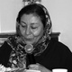

پذيرش > مقالات > خارج از چارچوب > اهمیت ثبت و مستند سازی اجراهای هنری
 هنر زنان هنر زنان

 اهمیت ثبت و مستند سازی اجراهای هنری اهمیت ثبت و مستند سازی اجراهای هنری
16 اردیبهشت 1387 - فیروزه مهاجر - نسخه قابل چاپ
وقتی صحبت از هنر زنان می شود همه به حوزه ی خانگی فکر می کنند؛ وقتی حرف هنر از فمینیستی است افراد مختلف فکر های مختلف و پراکنده می کنند. انگار که اولی اتحاد و آرامش ایجاد می کند و دومی تفرقه و نگرانی.
این دیگر زن و مرد ندارد. همه ممکن است دچار احساساتی از این قبیل بشوند. واقعا چه تعدادی از ما وقتی می گویند هنر زنان سوآل می کنیم که منظور چیست؟
به نظر من این طور می رسد که فقط آن هایی که به نوعی با هنر فمینیستی آشنا هستند، یعنی بدیلی برای هنر زنان می شناسند، در مورد اولی سوال مطرح می کنند. در کل می شود گفت فقط وقتی ذات گرایی نمی کنیم، وقتی می دانیم همه چیز به طور فرهنگی ساخته می شود، می خواهیم بدانیم وقتی کسی می گوید " هنر زنان" منظورش چیست.
کلیشه ها به ما می گویند که هنر زنان یعنی آشپزی، خانه داری، خیاطی و گلدوزی و ... بچه داری. همه هنرهایی که خیلی وابسته است به این که خانه ای و آشپزخانه ای و بچه ای و فراغتی و ... برای یک زن موجود باشد.
و در هر حال هنرهایی گذرا، هرچند تداوم یافته در طول قرن ها، در چارچوب روابطی چنان غیردمکراتیک که امکان شکلی مستقل گرفتن را نیافته. حتی نمی شده اسمش را "هنر در خدمت خانواده" گذاشت، چون در چنین قالبی قراردادنش هم با ممانعت و مخالفت رو به رو بوده.
منظورم این است که خلاقیت ها و هنرمندی ها محدود به عرصه خانه و جزو زندگی روزمره زن هاست، بدیهی شمرده می شود، و صرفا اجازه دارد در حوزه خانگی، و در زندگی خصوصی متجلی شود. ثبت نمی شود، نه اسم زنی روی آن است و نه جمعی است، و سهیم شدنش با دیگران هم انگار به طور طبیعی اتفاق می افتد و کسی خصلت فرهنگی برایش قائل نیست. در کل، اگر به هنر زنان در فرایند تاریخی اش نگاه کنیم، خیلی هم هنر به نظر نمی رسد. و برای همین است که فکر می کنم نمی توان از هنر زنان به هنر فمینیستی بدون اما و اگر رسید، برخلاف تصور برخی دوستان.
نمونه روشنی پیش روی ماست. دردو دهه اخیر، حدودا از اواسط دهه 1360 به بعد، زنان هنرمند بسیار فعال بوده اند، و جز در حوزه موسیقی که ورود به برخی عرصه های آن با مشکل مواجه بوده ارائه سایر هنرها برعکس بدون ممانعت صورت گرفته است. بگذارید در ضمن بگویم که در ارتباط با موسیقی هم ظاهرا تا جایی که پای زنان در میان است به عرصه عمومی کشیده شدنش است که بیشترین عامل و بهانه ممنوعیت شده است. چون با توجه به اصل" هنرهای زنان باید خانگی باشد"،" زنان نباید اسباب بی آبرویی خانواده شوند"، هنرشان باید در خانه و در فضای بسته ارائه شود و دور از چشم و گوش اغیار. این امر در مورد موسیقی خیلی بارز است اما باقی هنرها هم از این نوع داوری ها برکنار نمانده اند.
به این ترتیب است که می بینیم در این سال ها زن ها آثار هنری بسیاری را به نمایش عمومی گذاشته اند، بیشتر نقاشی، مجسمه سازی و اینستالیشن، که باید عکس و ویدئوکلیپ را هم به آن اضافه کرد، اما جز در مواردی که خود رسانه قابلیت متفاوت و وارونه ساز داشته، سخت توانسته ایم به هنر زنان، ویژگی های هنر فمینیستی را منتسب کنیم. چون یک ویژگی هنر فمینیستی به راستی این است که خانگی نیست، عمومی است و دمکراتیک است. هرچند عمومی و دمکراتیک بودن فقط به هنر زنان مربوط نمی شود. تلاش برای منسوب کردن هنر به افراد خاص، برای تاکید روی نبوغ، نابغه شمردن هنرمندان، درست است که خاص مردان بوده اما به هرحال به گروه های خاصی از مردان اختصاص داشته و در کل روال معمول سلسله مراتبی اش را دنبال کرده، و همواره با کنارگذاشتن و نادیده گرفتن خیلی ها، چه زن و چه مرد.
غیر از گرایش به سلسله مراتب ساختن در همه موارد و از جمله در حوزه هنر خیلی چیزهای دیگری هم این وسط تاثیر داشته و نقش داشته که خارج از بحث ماست از جمله طبقاتی و قومی کردن هنر و ... اما شکاف اصلی بین هنری زنان در این دو دهه و هنر فمینیستی عمدتا مربوط به این مسئله می شود که در هر صورت هنر فمینیستی، هنر عمومی است. اهمیت هنر خیابانی و اجتماعی هم در عمومی بودن آن است. انتخاب موضوع و زاویه دید هم البته مهم است وگرنه همسن و سالان من یادشان هست نیمچه تئاترهایی را که زنان برای تفریح در خانه اجرا می کردند و البته همیشه تسکین دهنده آلام شان هم بود.
هنر فمینیستی به این دلیل ساده عمومی است که در تاروپود زندگی عمومی تنیده شده. یک جور تعامل با جامعه، یک جور مطالعه جامعه، هم هست و بعد؟ به نظرم هنر فمینیستی از زاویه بحث عمومی بودن از این فراتر می رود. در دسترس همگان قرار داشتن تولیدات، رعایت حق پا برجای افراد برای ارتباط برقرار کردن با این هنر، و نوعی هنر پایدار ایجاد کردن است که مهم است. در ضمن هنر فمنیستی، هنر گروهی است، هنر آفرینش اشتراکی است به معنای وسیع کلمه. از این زاویه باید به پایدار ماندن آن نگاه کرد.
هر موضوعی را که درباره هنر فمینیستی مطرح کنیم، درباره هنر فمینیستی دیداری، شنیداری، اجرایی که سه نوع آشنا برای همه مان هستند، عمومی و اشتراکی بودن و همکاری، مسئله اصلی و عمده است. عمومی و مبتنی بر همکاری بودن در هنر فمینیستی واژه های کلیدی هستند و هر دوی اینها تعریف لازم دارند.
عمومی غیر از گروهی و اشتراکی بودن یعنی چه؟ یعنی موضوع عمومی باشد یا اجرا؟ آیا نمایش عمومی در یک گالری به قدر کافی عمومی هست یا خیر؟
معمولا عمومی در تجربه های هنر فمینیستی به مفهومی گسترده تر از انجام کار در خانه و نمایش در یک سالن به کار می رود. عمومی در این مورد یعنی، همواره بیشترین افراد به آن دسترسی داشته باشند. این امر ما را با اهمیت ثبت و مستندسازی و توزیع مواجه می کند و تاکید من هم روی همین موضوع است؛ چون دیروز از تماشای تئاتر دانشکده اقتصاد محروم ماندم و می دانیم که آن اجرا اگر هم تکرار شود یک چیز دیگر است و روایتی جداگانه دارد.
یک نکته مهم ثبت و مستند کردن اجراهایی است که واقعا تکرار شدنی نیستند حتی اگر هر روز انجام شوند، ثبت و مستند کردن و حداقل در سایتی عرضه کردن که امکان مراجعه به آن وجود داشته باشد، که البته خیلی عمومی اش نمی کند. پس باید راه های دیگری هم اندیشید.
در جاهای دیگر وقتی راجع به هنر فمینیستی می خوانیم مثلا سوزان لیسی، نه تنها اجراهایش در تلویزیون عمومی پخش می شود بلکه فیلم این اجراها را هم می شود خرید، کرایه کرد و دید. لیسی را مثال زدم چون تلاش او برای نمایش عمومی باعث شد که حتی به موزه هنرهای معاصر تهران هم برسد. این عمومی بودن یا شدن البته به سختی و با تمهیداتی ممکن می شود. شاید خیالپردازی باشد، اما اگر قرار باشد در این حوزه پیشرفت کنیم، اگر قرار است دانش اندوخته و منتقل شود، باید ثبت و مستند شود و در دسترس باشد و عمومی شود. متاسفانه با عکاسی صحنه نمی شود این کار را کرد، یعنی عکس ها را به ما نشان دادن کافی نیست.
نکته دیگر، اهمیت نظریه پردازی در این حیطه است. تجربه این دوره جنبش زنان نشان می دهد که تا همه چیز، ثبت و مستند نشود، تا به قدر کافی نقد و بررسی وجود نداشته باشد، هم ممکن است مسیر گم شود و هم تجربه ای منتقل نشود. اولی خیلی مهم نیست و بعضی وقت ها هم، اگر دومی حتما انجام شود یعنی اگر تجربه منتقل شود، خارج شدن از مسیر و حتی یافتن مسیرهای جدید بد که نیست هیچ، خیلی هم خوب است. اما مسئله انتقال تجربه خیلی مهم است و از زوایای بسیار مطرح است که صحبت درباره شان باید به وقت دیگری موکول شود.
من در این جا فقط می خواستم روی این جنبه مهم هنر فمینیستی، یعنی عمومی بودنش وعمومی ساختنش و ثبت و نقدش تاکید کنم و توجه بیشتری را به این مسئله برانگیزم. امیدوارم که موفق شده باشم.
ارسال به
بالاترین
،
توییتر
،
فریندفید
،
فیسبوک
در همين بخش :
 8 مارس روزی که نمی توان از ما دریغ کرد 8 مارس روزی که نمی توان از ما دریغ کرد
با طلاق توافقی از حقارت و کتک و فحش رها شدم /گزارشی از دادگاه محلاتی: مریم مالک
تجمع مادران عزادار در رشت
تغییر ممکن است/ جلوه جواهری(26 روز پس از بازداشت کاوه مظفری)
گامهایی که با تزلزل نا آشنایند/ گرامی داشت چهلم ندا در رشت
ديگر بخش ها :
طرح یک میلیون امضا
|
مقالات
|
سایت نوشته ها
|
اخبار
|
گزارش كمپين
|
گفت و گو
|
علیه سکوت
|
كوچه به كوچه
|
نامه های شما
|
گزارش ویژه
|
گفتگو با اعضا
|
ویژه سالگرد کمپین
|
تصویر برابری
|
دل آرام علی
|
تریبون
|
مقالات
|
تاریخ شفاهی
|
خارج از چارچوب
|
کتابخانه
|
درباره کمپین
|
کمپین در شهرها
|
کمپین در بند
|
صدای تغییر
|
ویژه 22 خرداد
|
لایحه حمایت از خانواده
|
گالری
|
عشا مومنی
|
امیر یعقوبعلی
|
خدیجه مقدم
|
راحله عسگری زاده و نسیم خسروی
|
پروین اردلان،جلوه جواهری، مریم حسین خواه، ناهید کشاورز
|
زینب پیغمبرزاده
|
سعیده امین، سارا ایمانیان، محبوبه حسین زاده، ناهید کشاورز و همایون نامی
|
احترام شادفر
|
نسیم سرابندی زاده،فاطمه دهدشتی
|
وبلاگ مهمان
|
پرونده خرم آباد
|
دستگیری ها
|
مریم مالک
|
پرستو اللهیاری
|
مهرنوش اعتمادی
|
سمیه رشیدی
|
Other Languages
|
همراهان
|
«فراخوان کمپین ده روز با بهاره هدایت»
| English
|